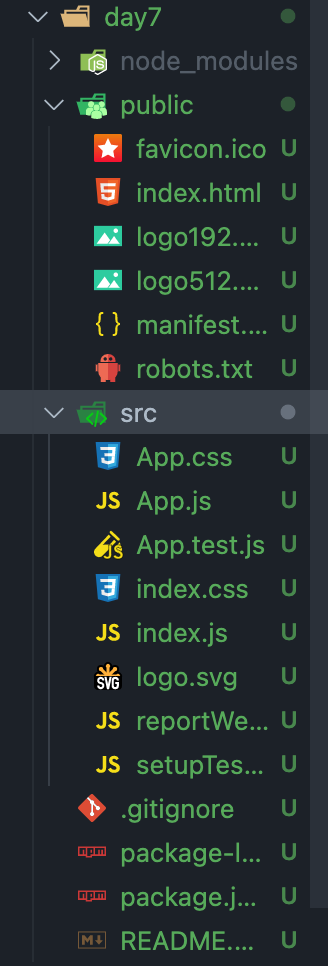
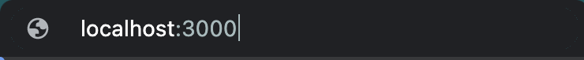
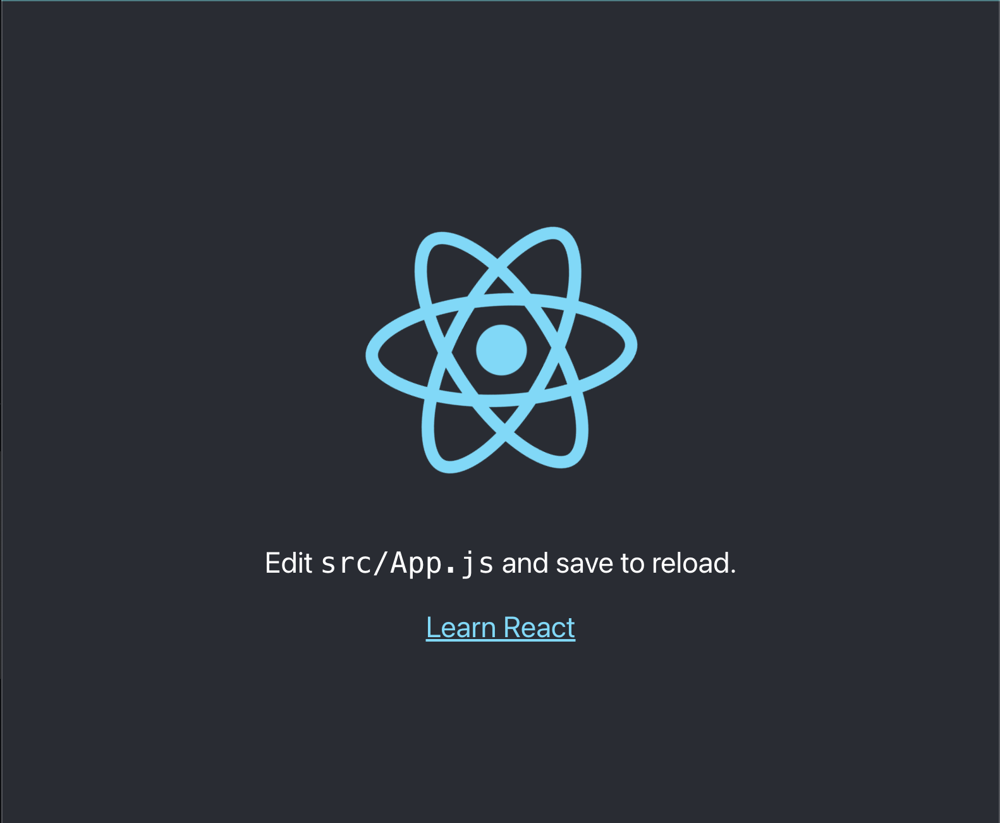
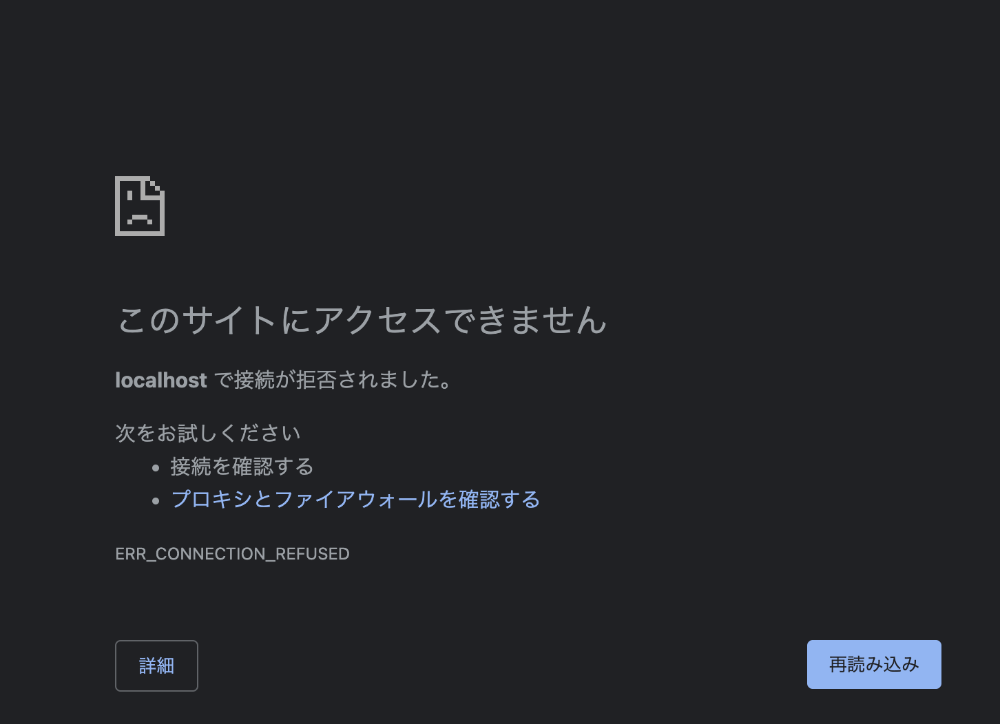
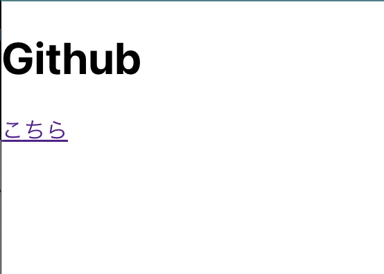
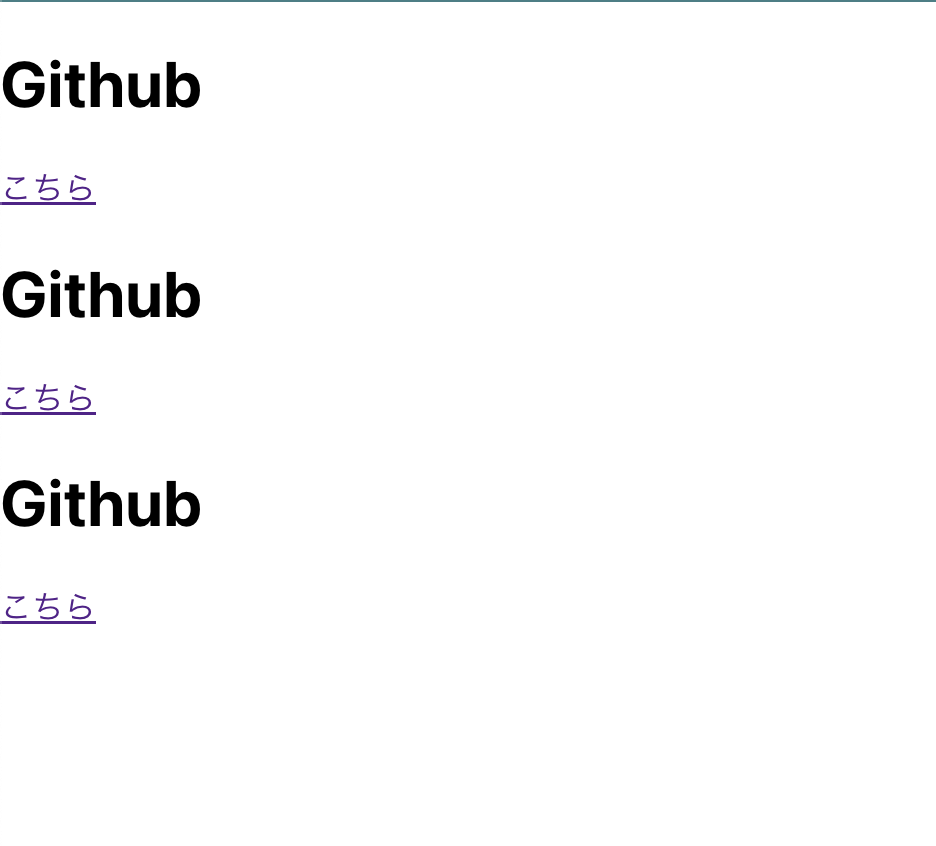
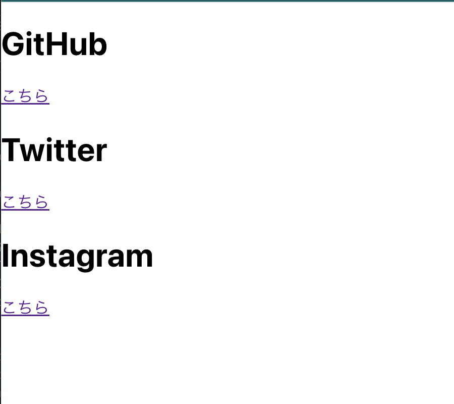

今回は「React.js」を扱う。
day6の「HTML+CSS」では難しかった表現も、React.jsを用いることによって簡単になる。

しかし、その簡単さがゆえに、HTMLとCSS、JavaScriptの基本が疎かになり得るので、注意しよう。
React.jsはFacebook社が開発したUIパーツを構築するための「JavaScriptライブラリ」です。
React.jsと共に人気のある「Vue.js」は「JavaScriptフレームワーク」です。
(ちなみにNode.jsはJavaScript実行環境)
フレームワーク
プログラムの枠組みであり、設計も勝手に行ってくれる。
ライブラリ
プログラムの集まり。設計は自分でやる。
細かい基準は定かではありませんが、フレームワークの方が効率が良いことが多いです。
逆に言うと、ライブラリの方が自由度は高くなります。
React.jsは基本的にはwebページを作成できますが、「React Native」ではReact.jsと同じような書き方でモバイル開発ができます。
コンポーネントやpropsといった特徴もある。
コンポーネント
React.jsで画面に表示される部品
表示に必要なデータや処理を1つにまとめたもの
部品を再利用できる。
props
データのまとまり
コンポーネントにpropsを渡すことで同じようなUIを簡単に実装できる。
またpropsを引数にとるコンポーネントは関数コンポーネントと呼ぶ。
今回はnpmを用いてReact.jsを導入する
npmは「Node Package Manager」の略でday1でインストールしたNode.jsのモジュールを管理するツールです。
$ npm install パッケージ名でローカルインストールでき、
$ npm install -g パッケージ名のように-gをつけるとグローバルインストールになる。
ローカルインストールでは、プロジェクトのルート配下のnode_modeulesにパッケージが保存され、グローバルインストールではnpmのルート配下のnode_modulesに保存される。
また、ローカルインストール時はパッケージのversionなどの情報がpackage.jsonに保存される。このpackage.jsonがあると、チーム開発でメンバーに共有することで開発環境を統一することができる。
npxをインストールする
npmパッケージのnpxを使うことでreactの環境を簡単に構築することができる。
まずはnpxをインストールしよう
npxはこちら
$ npm install -g npxnpxでreact環境を簡単に構築
SPSS2022/上でコマンドを実行しよう
コマンド実行後1分程度時間がかかるので気長に待とう
$ npx create-react-app day7SPSS2022/day7があることを確認する
作成されたフォルダ内のファイルを確認

Public
今回の場合だとpublicフォルダは公開フォルダとなり、ユーザに見えるものが入っているアセット達です。index.htmlを見てみると(コメントは消しています)
SPSS2022/day7/public/index.html
<!DOCTYPE html>
<html lang="en">
<head>
<meta charset="utf-8" />
<link rel="icon" href="%PUBLIC_URL%/favicon.ico" />
<meta name="viewport" content="width=device-width, initial-scale=1" />
<meta name="theme-color" content="#000000" />
<meta
name="description"
content="Web site created using create-react-app"
/>
<link rel="apple-touch-icon" href="%PUBLIC_URL%/logo192.png" />
<link rel="manifest" href="%PUBLIC_URL%/manifest.json" />
<title>React App</title>
</head>
<body>
<noscript>You need to enable JavaScript to run this app.</noscript>
<div id="root"></div>
</body>
</html>この<div id="root"></div>がReactによって描き直される仕組みになっています。
src
開発に関わるソースコードはこのディレクトリに配置します。
さまざまなファイルが置かれていますが、index.jsとApp.jsが重要になります。
index.js
index.jsはページに表示の処理が書かれています。index.jsが先の<div id="root">を読み込んで処理をしています。
SPSS2022/day7/src/index.js
import React from 'react';
import ReactDOM from 'react-dom/client';
import './index.css';
import App from './App';
import reportWebVitals from './reportWebVitals';
const root = ReactDOM.createRoot(document.getElementById('root'));
root.render(
<React.StrictMode>
<App />
</React.StrictMode>
);
// If you want to start measuring performance in your app, pass a function
// to log results (for example: reportWebVitals(console.log))
// or send to an analytics endpoint. Learn more: https://bit.ly/CRA-vitals
reportWebVitals();コンポーネントとは
<App />のことであり、最初の状態だとApp.jsに処理が書かれています。
読み込む際は
import App from './App';のように読み込みます。
SPSS2022/day7/src/App.js
import logo from './logo.svg';
import './App.css';
function App() {
return (
<div className="App">
<header className="App-header">
<img src={logo} className="App-logo" alt="logo" />
<p>
Edit <code>src/App.js</code> and save to reload.
</p>
<a
className="App-link"
href="https://reactjs.org"
target="_blank"
rel="noopener noreferrer"
>
Learn React
</a>
</header>
</div>
);
}
export default App;
// If you want to start measuring performance in your app, pass a function
// to log results (for example: reportWebVitals(console.log))
// or send to an analytics endpoint. Learn more: https://bit.ly/CRA-vitals
reportWebVitals();今回はこのApp.jsを書き換えてReact.jsを体験してみよう。
React.jsに限らずnpmのパッケージを動かすには「package.json」の「scripts」を見よう。
SPSS2022/day7/package.json
...省略
"scripts": {
"start": "react-scripts start",
"build": "react-scripts build",
"test": "react-scripts test",
"eject": "react-scripts eject"
},
...省略scriptsをみると「start, build, test, eject」が設定されていることがわかりました。
※但し今回はstartコマンドしか使いません
起動
$ npm run start
Compiled successfully!
You can now view day7 in the browser.
Local: http://localhost:3000
On Your Network: http://192.168.0.21:3000
Note that the development build is not optimized.
To create a production build, use npm run build.
webpack compiled successfully
ブラウザで「localhost:3000」と入力しよう


止める
止めるには「Ctrl + z」or「Ctrl + c」で止めることができる
ブラウザを確認して止まっていることを確認しよう

App.jsをシンプルにする。
SPSS2022/day7/src/App.js
import './App.css';
function App() {
return (
<div>
<h1>Github</h1>
<a href="https://github.com/">こちら</a>
</div>
);
}
export default App;詳細は割愛しますが、必ずdivタグの中に書いてください。

ブラウザで確認して変更されていることを確認してください。
コンポーネントが活きてくるのは、何回も同じUIを表示させたい時です。
index.jsを以下のように変えてみましょう
SPSS2022/day7/src/index.js
import React from 'react';
import ReactDOM from 'react-dom/client';
import './index.css';
import App from './App';
import reportWebVitals from './reportWebVitals';
const root = ReactDOM.createRoot(document.getElementById('root'));
root.render(
<React.StrictMode>
<App />
<App />
<App />
</React.StrictMode>
);
// If you want to start measuring performance in your app, pass a function
// to log results (for example: reportWebVitals(console.log))
// or send to an analytics endpoint. Learn more: https://bit.ly/CRA-vitals
reportWebVitals();<App/>コンポーネントを3つにしてみました。
ブラウザで確認しよう。

3つあることを確認しよう
先のコンポーネントで3つの要素を表示させた。
しかし、「h1タグのテキストとaタグのhrefだけを変えたい！」といった要望が考えられる。
この要望を達成するために必要な機能がpropsだ。propsを用いることによって動的なコンポーネント通称関数コンポーネントを扱うことができる。
App.jsにpropsの設定をしよう。
SPSS2022/day7/src/App.js
import './App.css';
function App(props) {
return (
<div>
<h1>{props.site}</h1>
<a href={props.url}>こちら</a>
</div>
);
}
export default App;次にindex.jsを書き換える。
SPSS2022/day7/src/index.js
import React from 'react';
import ReactDOM from 'react-dom/client';
import './index.css';
import App from './App';
import reportWebVitals from './reportWebVitals';
const root = ReactDOM.createRoot(document.getElementById('root'));
root.render(
<React.StrictMode>
<App site="GitHub" url="https://github.com/"/>
<App site="Twitter" url="https://twitter.com/"/>
<App site="Instagram" url="https://www.instagram.com/"/>
</React.StrictMode>
);
// If you want to start measuring performance in your app, pass a function
// to log results (for example: reportWebVitals(console.log))
// or send to an analytics endpoint. Learn more: https://bit.ly/CRA-vitals
reportWebVitals();ブラウザを確認すると

もちろん「こちら」をクリックするとそれぞれのサイトに遷移する
このようにpropsを用いた関数コンポーネントで便利なwebページ作りができる
自由にApp.jsを書き換えて楽しもう
SPSS2022/day7/src/App.js
import './App.css';
function App(props) {
return (
<div>
自由に書いてみよう
</div>
);
}
export default App;今回はReact.jsについて学んだ。
今回学んだ内容は基礎中の基礎で、Reactはさまざまな機能を持っている。
興味がある方は「React tutorial」をやってみても良いかもしれない。
次回は「UIフレームワーク+Figma」を扱う。
UIフレームワークを用いると更に爆速でwebサイトを作ることができる。